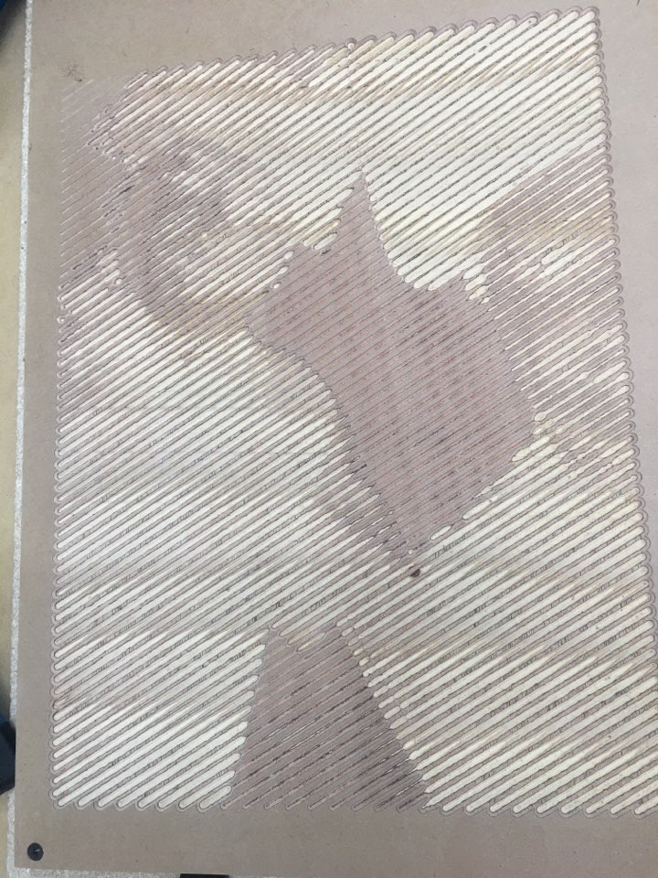
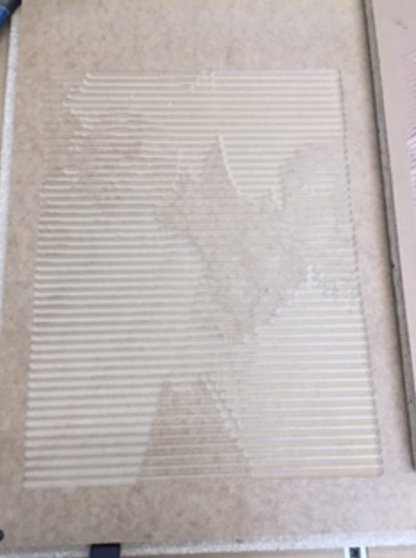
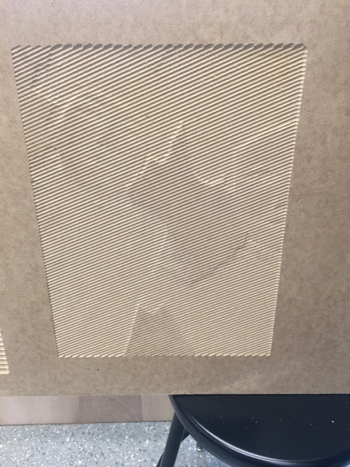
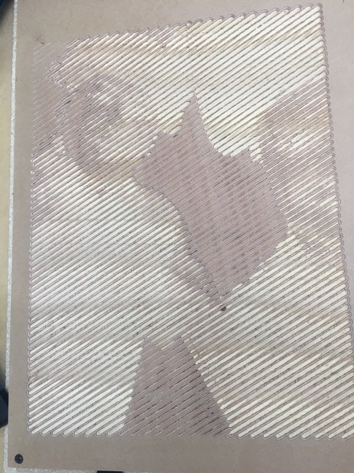
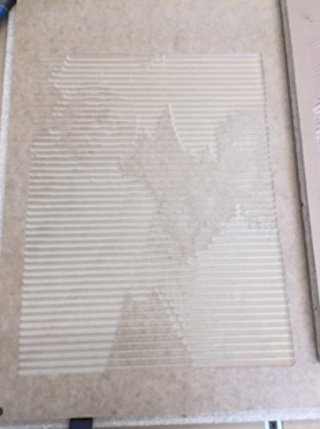
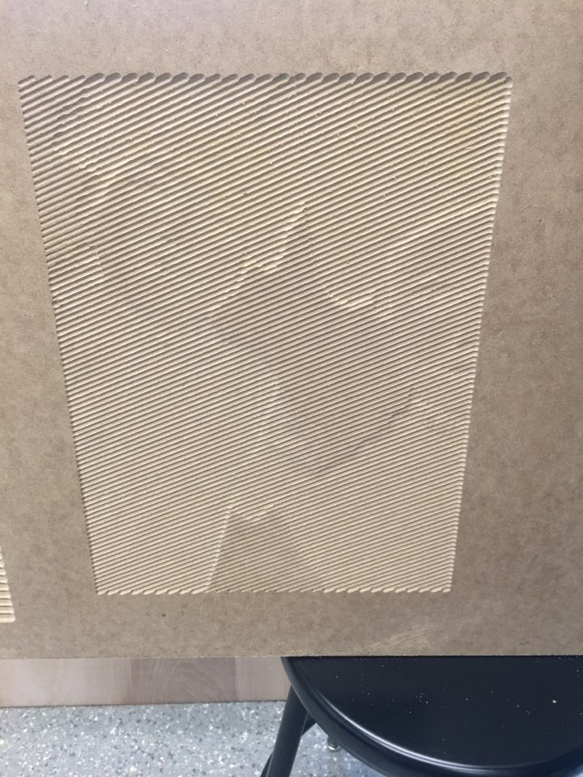
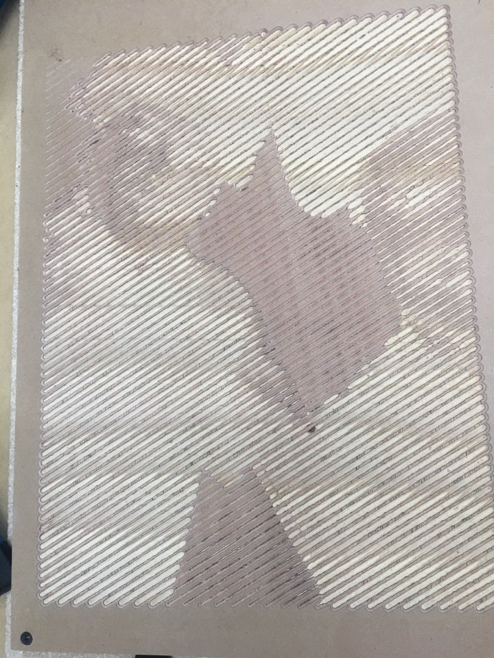
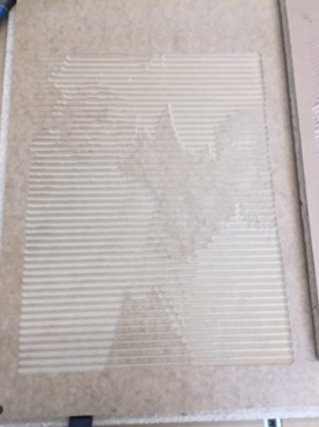
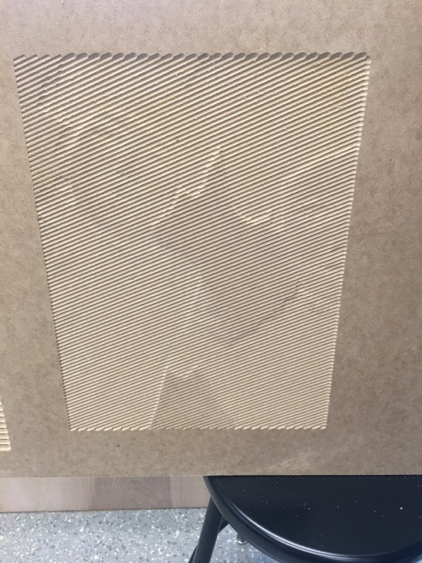

This week, we experienced a little bit of welding. My first welding experience was scary - it was really challening to control my hand, not be scared of the flames and the dark! However, I really wish to be able to weld better one day! Also, the task for this week was to use photo v-carve to print out a picture. I was intrigued by how many different functions V-Carve has!
When Ran and I were deciding which photos to choose, we decided to choose the selfie we took to capture our first welding journey! Sadly, our first few attempts in printing are not as good as the latter ones.
I will guide you through Ran and my journey in using photo v-carve and show you our outcome!
This is how our four projects turned out. 1) The problem with the first file was that the details were too fine - so it was hard to notice the difference in hue.
2) Therefore, we made the depth deeper, and the result turned out to be a little better (but not enough to satisfy Ran)
3) Devastated, we decided to try the horizontal cut with deeper depth, but the result was disappointing.
4) Mr. Gerber gave us a manual, and we followed the settings as it was listed in the manual. We chose a shallow groove and it was the best of all attempts!



Getting to use photo V-Carve was really interesting. Who would have imagined we can now print pictures, or even, carve pictures on wood? While it was frustrating at times to see unsatiable results, I got to learn from my mistakes. When I use this next time, I will not rely too much on the preview, and actually test print it on a smaller piece before going on to print the actual object. That way, I will be able to know exactly what depth it will cut through, and get a better idea of how it would turn out.